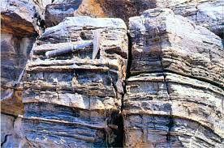
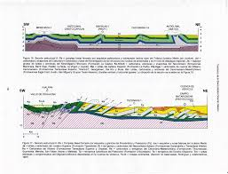

20+
Mapas Temáticos
12
Proyectos GIS
6
Modelos Geológicos
100%
Visualización Científica
Mapa Interactivo GIS Agua Nueva Coahuila
Perfil Geológico Poliforum
Descripción Geológica General: Agua Nueva, Coahuila
Contexto Geológico Regional
La región de Agua Nueva, ubicada en el estado de Coahuila dentro de la Sierra Madre Oriental, presenta una compleja evolución geológica relacionada con procesos sedimentarios marinos, deformación tectónica y levantamiento orogénico. La zona está dominada por secuencias sedimentarias del Mesozoico, principalmente del Cretácico, que fueron depositadas en antiguos ambientes marinos asociados al margen continental del Golfo de México.
Litológicamente predominan calizas, lutitas, margas y dolomías que afloran ampliamente en sierras y cañones de la región. Estas unidades sedimentarias registran ambientes de plataforma carbonatada, cuencas profundas y sistemas transicionales marinos. La deformación tectónica relacionada con la Orogenia Laramide generó plegamientos y fallamientos compresivos que actualmente controlan la geomorfología regional.
Desde el punto de vista estructural, Agua Nueva forma parte del cinturón plegado y cabalgado de la Sierra Madre Oriental, donde son comunes los anticlinales, sinclinales y fracturas regionales. Estas estructuras tienen gran importancia para la exploración de hidrocarburos y el análisis de recursos naturales en el noreste de México.
La región también posee relevancia paleontológica y estratigráfica debido a la abundancia de fósiles marinos, especialmente ammonites, inocerámidos y microfósiles calcáreos que permiten interpretar cambios paleoambientales durante el Cretácico Superior. Además, las condiciones geológicas han favorecido la generación y acumulación de materia orgánica, haciendo de esta zona un área de interés petrolero y científico.



Software y Herramientas
ArcGIS Pro & ArcGIS Online
Desarrollo de mapas web interactivos, análisis espacial avanzado y visualización geoespacial en plataformas ESRI.
QGIS & Teledetección
Procesamiento raster, análisis satelital y generación de modelos digitales del terreno.
Programación Web GIS
Desarrollo de interfaces científicas utilizando HTML5, CSS3 y visualización dinámica de datos geológicos.
Línea de Tiempo Académica
2024 · Cartografía Digital
Introducción al análisis espacial y elaboración de mapas geológicos temáticos.
2025 · Sistemas de Información Geográfica
Integración de capas vectoriales, raster y análisis geoespacial aplicado.
2025 · Modelado Geológico
Construcción de perfiles estratigráficos y análisis estructural regional.
2026 · Programación Aplicada a la Geología
Desarrollo de dashboards científicos y plataformas web GIS interactivas.
Trabajos del Semestre
Cartografía Digital
Elaboración de mapas temáticos mediante ArcGIS y QGIS, incluyendo simbología geológica, análisis espacial y generación de modelos cartográficos.
Digitalización
Digitalización de cartas geológico-mineras utilizando herramientas digitales y SIG.
Perfiles Geológico
Construcción de perfiles utilizando herramientas digitales y SIG.
Programación Aplicada
Desarrollo de scripts y automatización de procesos geoespaciales mediante HTML5, CSS3 y AutoCAD.
Interpretación SIG
Integración de imágenes satelitales, datos topográficos y capas vectoriales para análisis geológico regional y ambiental.